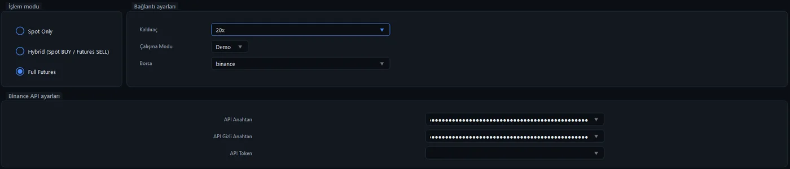

Безопасность и риск
Безопасность и API-ключи
Разрешения API-ключей, безопасность устройства и управление рисками — важные темы для пользователей Sentralyx. Эта страница описывает общие соображения безопасности без необоснованных заявлений.
Безопасность и контроль риска в Sentralyx
Шифрование API-ключей
API-ключи шифруются (Fernet) ключом, полученным из аппаратного идентификатора вашего устройства, и хранятся на вашем компьютере. Файл настроек, скопированный на другое устройство, расшифровать нельзя. Приложение рекомендует отключить в API-ключе разрешение на вывод средств.
Управляет только своими ордерами
Ордера Sentralyx помечаются идентификатором с префиксом «SX». Приложение управляет только позициями и ордерами, которые открыло само. Если на том же счёте есть позиция другого бота или ваша собственная, Sentralyx её не трогает и не открывает по этому символу новую фьючерсную позицию.
SL/TP на стороне биржи
При открытии позиции ордера стоп-лосс (SL) и тейк-профит (TP) отправляются и на биржу, поэтому остаются там даже при закрытом приложении. Если биржа отклоняет новый стоп-ордер, сохранённый стоп остаётся прежним. При резких движениях цены стоп-ордера могут исполняться с проскальзыванием.
Проверка позиций и ошибки
Приложение регулярно сверяет записанные позиции с позициями на бирже, закрывает записи для уже закрытых на бирже позиций и пытается восстановить недостающую защиту. При неожиданной ошибке биржи система останавливается.
Лимиты риска
- Дневной лимит убытка (в USDT)
- Максимальное число открытых позиций
- Максимальная длительность позиции: по истечении времени позиция закрывается автоматически.
- Защита прибыли с помощью трейлинг-стопа и безубытка
Защита реального режима
- При переходе в реальный режим появляется окно подтверждения; без API-ключа реальный режим выбрать нельзя.
- Если свободного баланса недостаточно, позиция не открывается.
- Сумма ордера округляется немного выше биржевого минимума, чтобы стоп-ордер тоже был допустимым.
- Пока открыта реальная позиция, тип торговли и биржу изменить нельзя.
Эти меры направлены на снижение риска, но не устраняют его. За безопасность счёта и устройства отвечаете и вы.
Обязанности пользователя
Область API-ключей
API-ключи должны создаваться только с необходимыми разрешениями. Право на вывод средств не должно быть включено. Проверка разрешений в аккаунте биржи является обязанностью пользователя.
- Не предоставлять API-ключам разрешение на вывод средств
- Отключать ненужные разрешения
- Контролировать стоп-лоссы и лимиты риска
- Не интерпретировать результаты бэктестинга как гарантию реальной торговли
Настройки безопасности должны оцениваться совместно с аккаунтом биржи, устройством и предпочтениями пользователя.

Десктопная модель приложения
Sentralyx описан как десктопный торговый терминал. Пользователь запускает приложение на своем устройстве и настраивает параметры подключения к бирже через свой собственный аккаунт.
Локальный запуск
Согласно документации продукта, Sentralyx запускается локально на компьютере пользователя. Пользователь отвечает за безопасность своего устройства, учетных данных и файлов.
Связанные страницы
Проверьте стратегию в виртуальном режиме уже сегодня
Скачайте приложение, соберите стратегию и посмотрите, как она работает, без реальных денег.